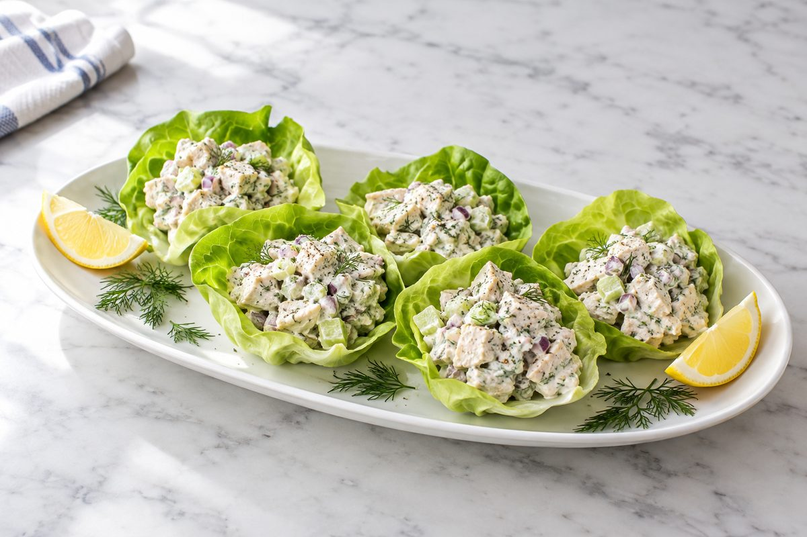
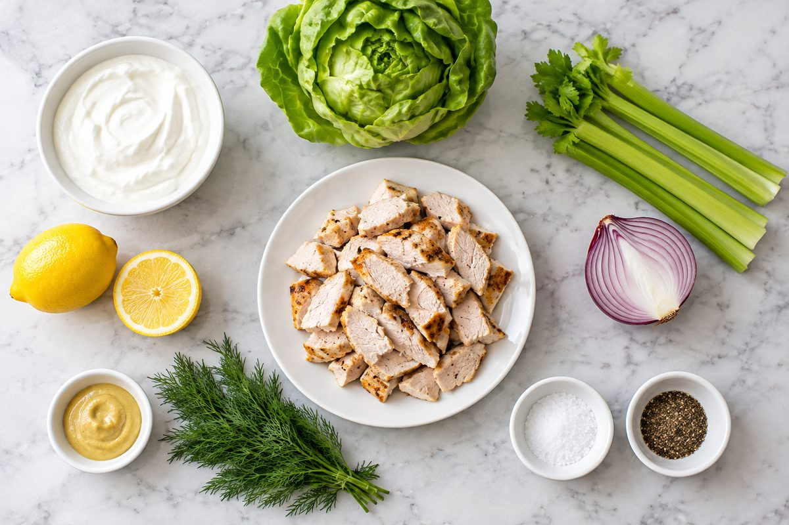
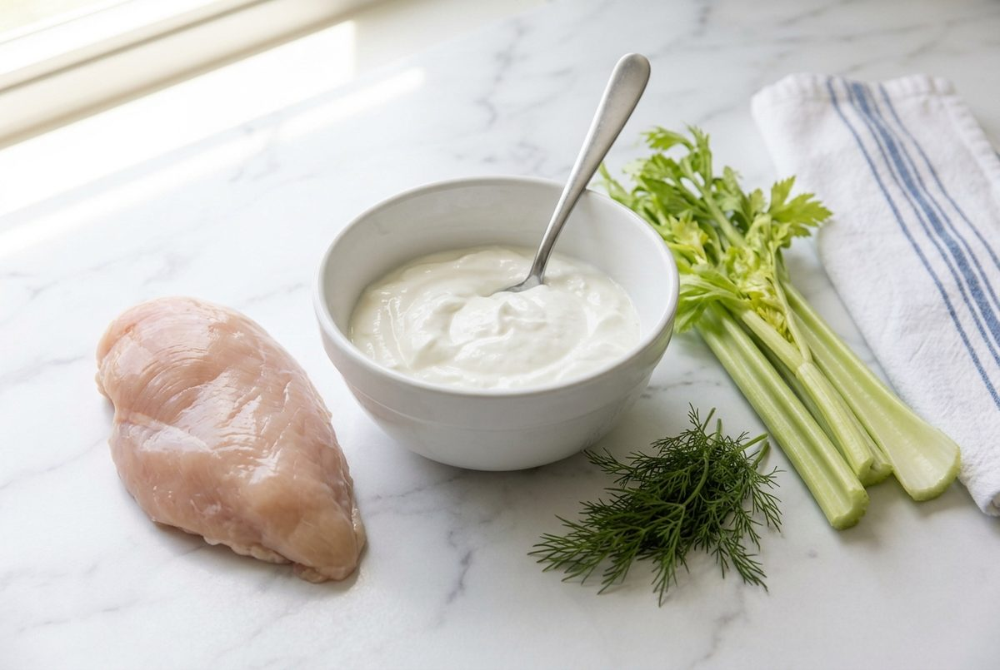
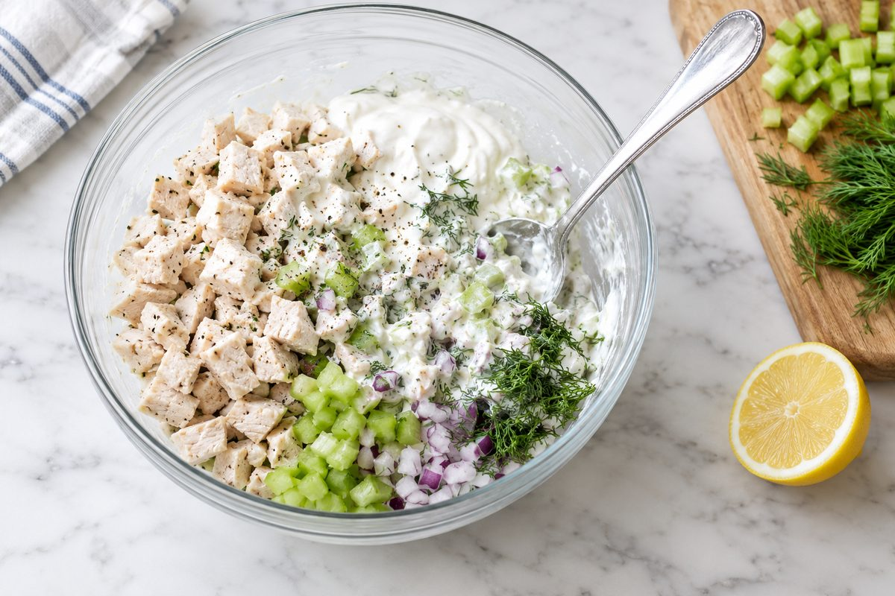
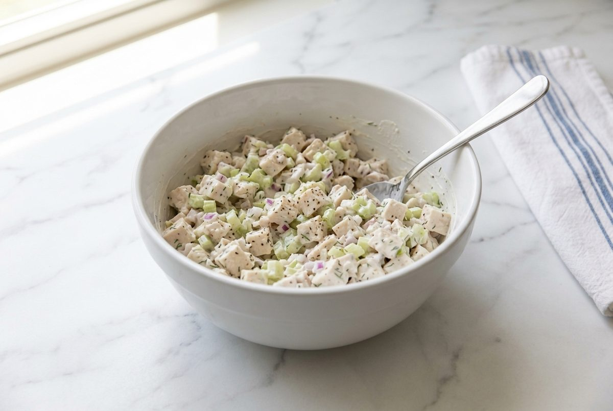
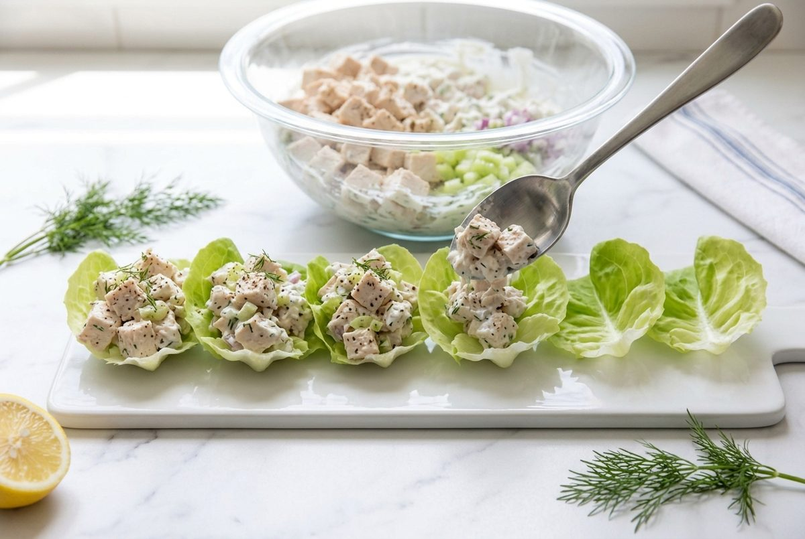
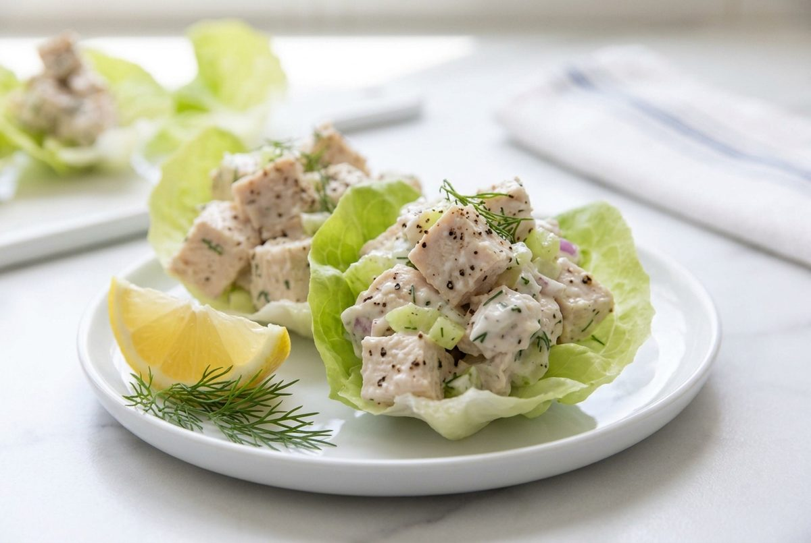
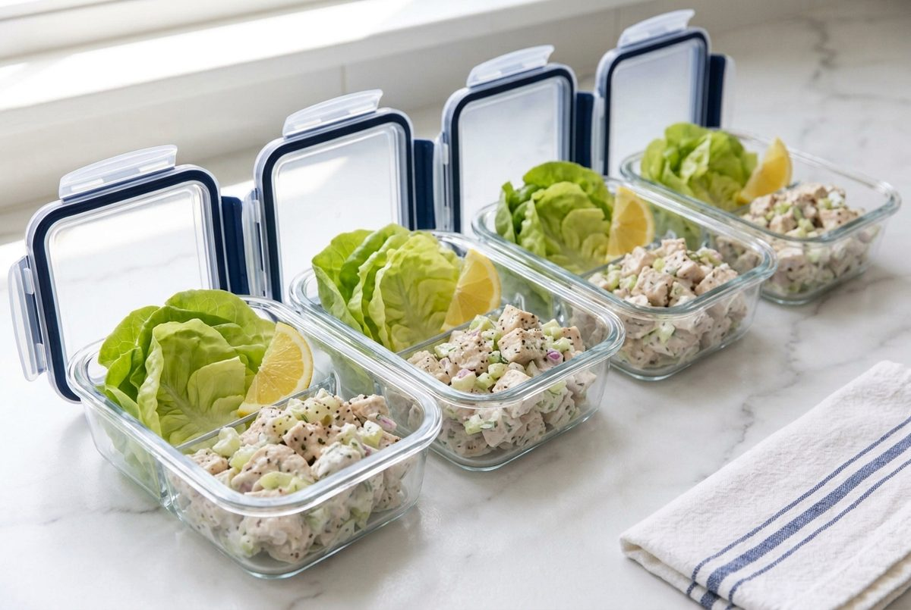

Greek Yogurt Chicken Salad Lettuce Cups
Estimated per serving: about 1 cup (230 g) of chicken salad with 3 lettuce cups. Values come from standard nutrition database figures and vary with brands, so check your yogurt label.

This is chicken salad without the mayonnaise. Thick Greek yogurt, a spoonful of Dijon mustard and fresh lemon juice make the creamy dressing, so you keep all the comfort and cut most of the fat. Each serving lands at about 47g of protein and under 270 calories.
Celery and red onion bring crunch, dill brings freshness, and butter lettuce leaves are the cups, so there is no bread to weigh it down. It takes about 15 minutes of hands-on work once the chicken is cooked, and it tastes even better after 30 minutes in the fridge.
Short on time? Use about 3 cups / 450 g of diced rotisserie chicken (shop-bought cooked chicken in the UK) and skip the cooking step.
Ingredients

- 1.5 lb / 680 g boneless, skinless chicken breasts (about 3 medium breasts)
- 1 cup / 245 g plain nonfat Greek yogurt
- 3 stalks celery (about 4 oz / 120 g), finely diced
- 1/4 cup / 40 g red onion, finely diced
- 2 tbsp chopped fresh dill, plus a few sprigs to serve
- 1 tbsp Dijon mustard
- 2 tbsp / 30 ml lemon juice (about 1 lemon), plus wedges to serve
- 1 tsp salt, divided
- 1 tsp ground black pepper, divided
- 1 head butter lettuce (about 12 large leaves)
Notes for UK and European cooks
- Oven: 400°F is 200°C, or 180°C in a fan oven (gas mark 6).
- Sheet pan: this is a baking tray in the UK and Europe. Parchment paper is called baking paper.
- Lettuce: butter lettuce is sold as butterhead or round lettuce. Little gem leaves also make good cups.
- Yogurt: look for thick Greek-style natural yoghurt. Use 0% or 2% fat, and avoid sweetened or flavored tubs.
- Allergens: contains milk (yogurt) and mustard, which is one of the 14 major allergens listed in the EU.
- Budget tip: chicken breast is usually cheapest in family packs, and large tubs of plain Greek yogurt cost far less per serving than small pots. Discount supermarkets such as Aldi and Lidl are often the best value.
Instructions
-
Cook the chicken. Preheat the oven to 400°F / 200°C (180°C fan, gas mark 6). Season the chicken breasts with 1/2 tsp of the salt and 1/2 tsp of the pepper, place them on a parchment-lined sheet pan (baking tray), and bake for 20 to 25 minutes, until the center reaches 165°F / 74°C. Rest for 10 minutes.

The base of the salad: lean chicken breast, thick Greek yogurt, celery and dill. - Let the chicken cool, then dice it into pieces about 1/2 to 3/4 inch / 1.5 to 2 cm. Finely dice the celery and red onion, and chop the dill.
-
In a large bowl, stir the yogurt with the Dijon mustard, lemon juice and the remaining salt and pepper. Add the chicken, celery, red onion and dill, and fold until everything is evenly coated.

Add everything to the dressing, then fold gently so the chicken stays in chunks. -
Taste and add more salt, pepper or lemon juice if you like. For the best flavor, cover and chill for 30 minutes.

The finished salad should be creamy but still chunky. -
Wash and dry the lettuce and separate 12 large leaves. Spoon about 1/3 cup / 75 g of the salad into each leaf.

Fill the cups just before serving so the lettuce stays crisp. -
Serve with lemon wedges and a sprig of dill. Three cups make one serving.

Chunky, creamy and fresh. -
To meal prep, divide the salad across 4 containers and pack the lettuce leaves and a lemon wedge alongside it, not mixed in.

Keep the lettuce separate and fill the cups when you eat.
Storage and Serving
- Fridge: store the salad in sealed containers at or below 40°F / 4°C. US guidance is up to 3 to 4 days. UK guidance is shorter: the Food Standards Agency advises eating leftovers within 2 days. Keep the lettuce in a separate container lined with a paper towel.
- Freezer: not recommended. The yogurt and celery turn watery once thawed.
- Serving: serve cold. Don't leave it out for more than 2 hours, or 1 hour on a hot day above 90°F / 32°C.
- Other ways to eat it: spoon it onto a baked sweet potato, into a whole wheat wrap, or over a green salad.